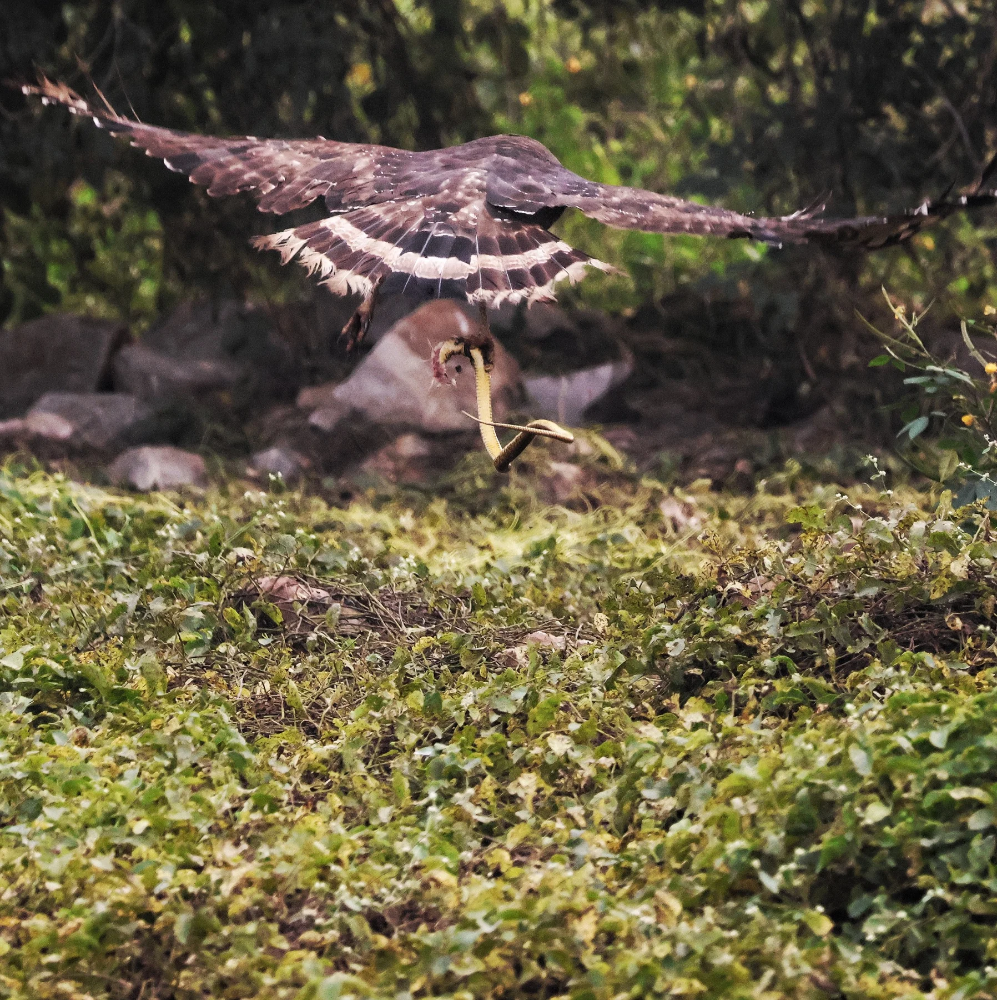
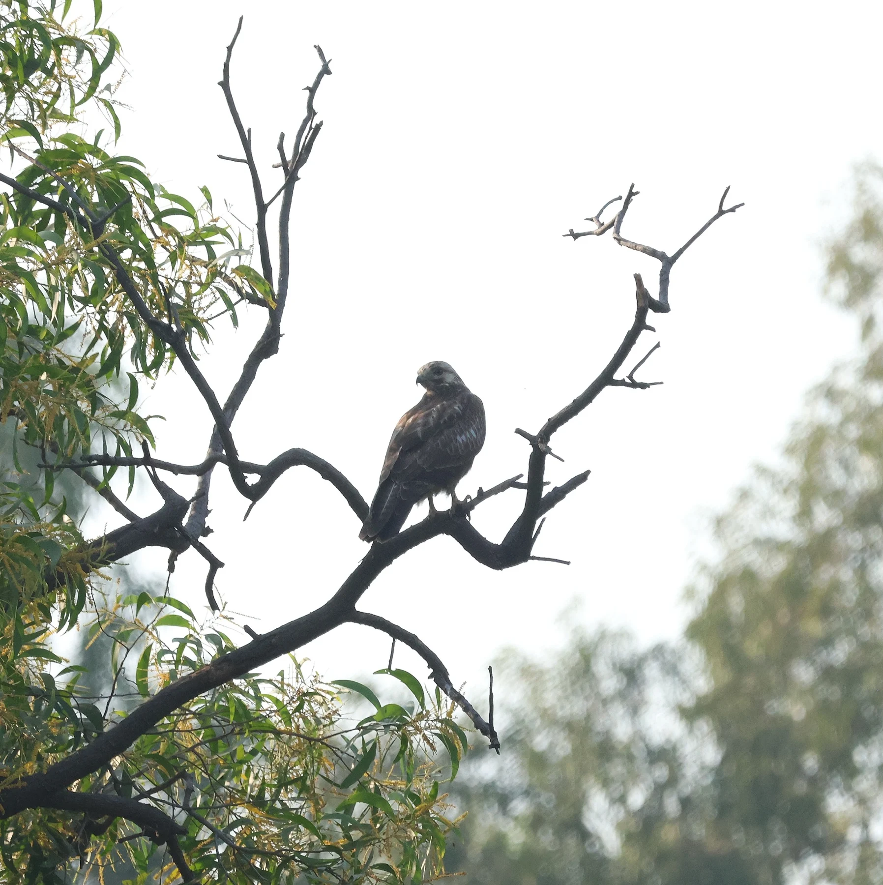
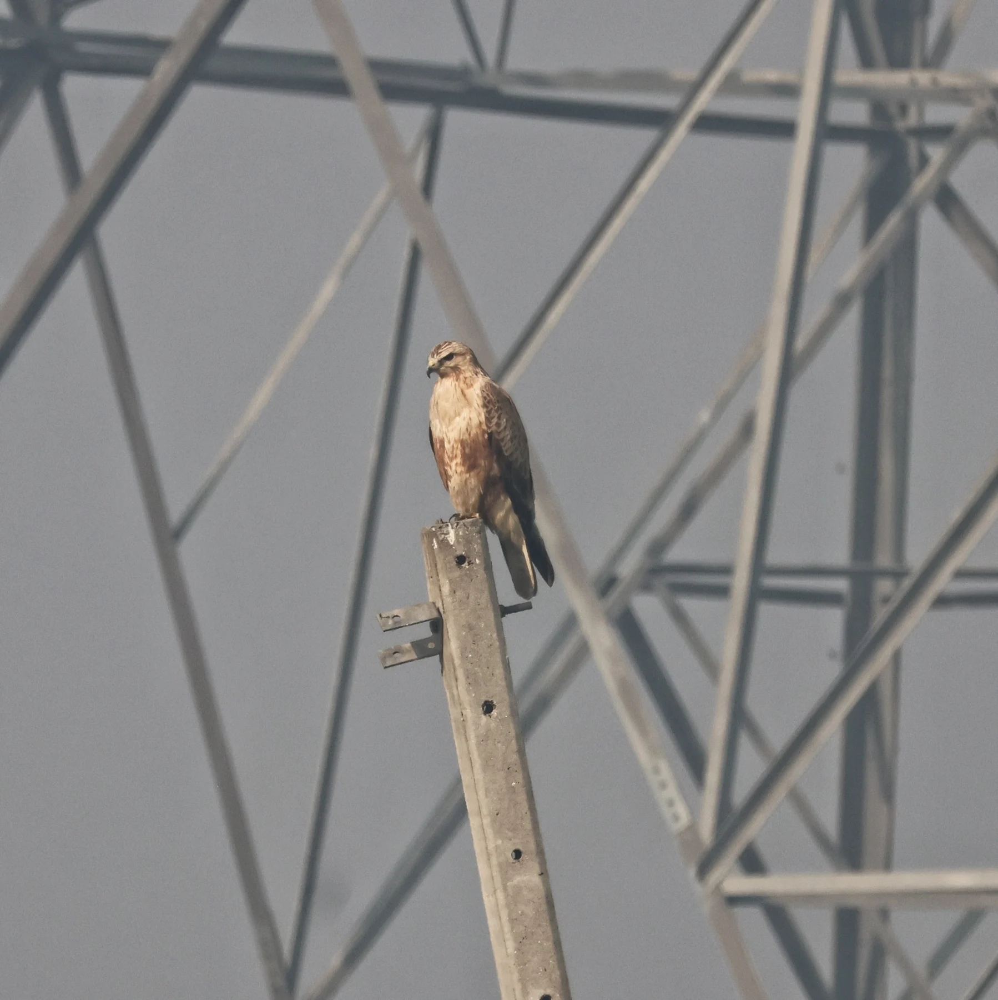
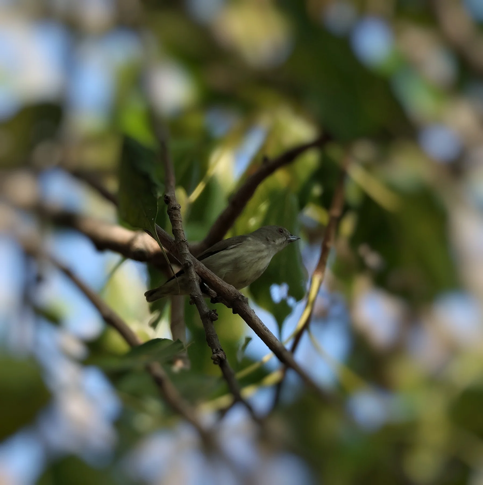
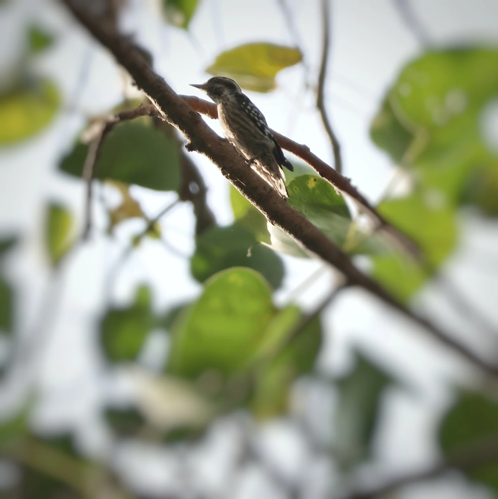

KASHIF YAMEENKASHIF YAMEEN
KASHIF YAMEENKASHIF YAMEENSelect a hotspot on the schematic map. Pins show approximate relative locations.
Come birding with me ↗ Yellow woodland bird · Kashif Yameen
Yellow woodland bird · Kashif YameenAnimated connections illustrate the birding network, not driving routes.
 Urban gardens & heritage
Urban gardens & heritageGarden paths, historic monuments and common urban birds.
Half day · Explore ↗
Wetlands & seasonal migrantsWetland edges, waterbirds and open-country birding.
Half or full day · Explore ↗ Yamuna wetlands
Yamuna wetlandsExplore accessible wetland viewpoints and waterbird habitats.
Half day · Explore ↗ Open wetlands
Open wetlandsScan open water and fields for seasonal birds and cranes.
Half or full day · Explore ↗
Wetlands & photographyExplore wetland habitats and surrounding agricultural landscapes.
Half day · Explore ↗
Aravalli woodlandDiscover scrub, rocky landscapes and woodland birdlife.
Half day · Explore ↗
Woodland trailsWalk forest paths and listen for woodland birds.
Half day · Explore ↗ Native habitats
Native habitatsExplore restored native vegetation and seasonal birdlife.
Half day · Explore ↗
Biodiversity & wetlandsDiscover restored ecosystems and their bird communities.
Half day · Explore ↗